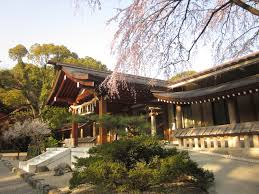
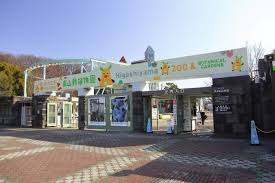
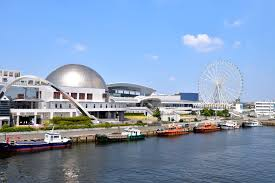

約1900年の歴史を持つ神社で、 三種の神器「草薙剣」を祀る由緒ある神社です。 初詣や観光地としても人気があります。
おすすめ観光地
名古屋には歴史ある神社や家族で楽しめる施設など、 多くの観光スポットがあります。 その中でもおすすめの3か所をご紹介します。
熱田神宮

東山動植物園

動物園・植物園・東山スカイタワーがある人気スポットです。 コアラやキリンなど多くの動物を見ることができます。
名古屋港水族館

シャチやイルカショーで有名な水族館です。 家族連れやカップルにも人気があり、 一日中楽しめる観光スポットです。